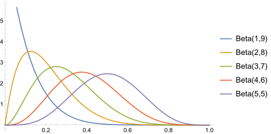
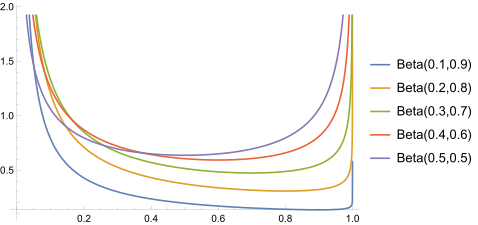
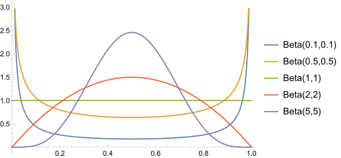

定义
PDF:
\text{Beta}(x;\alpha, \beta)=\frac{x^{\alpha-1}(1-x)^{\beta-1}} {B(\alpha,\beta)}
其中
B(\alpha,\beta)=\int_0^1 u^{\alpha-1}(1-u)^{\beta-1} du=\frac {\Gamma (\alpha )\Gamma (\beta )}{\Gamma (\alpha +\beta )} 叫做 Beta函数, 用于使整个分布的概率归一化。
Parameters:
\alpha >0, \beta>0
Support:
x \in [0, 1]
要点
- 这是一个连续分布。两个正参数 α,β 决定了分布的形态。
- Beta分布用于描述二项分布 \text{Binomial}(x; n,p) 中参数 p 的 不确定性，即 p 在不同取值下的可能性。
解释
以扔硬币为例。若想要了解一个硬币是不是公平的，可以用正面朝上的概率 p 来衡量这枚硬币的均匀程度。以上帝的视角，p 是一个确定的常数。而以我们的视角，则只能通过实际观测来推断它。利用贝叶斯推断，p 是一个随机变量，取值范围为 [0,1] 。 p 配有一个先验分布，用于表示对其各种可能取值的事先猜测。先验分布可以任意选取，在此我们刻意的选用Beta分布。
两个正参数 α 和 β 决定了Beta分布的形状。不同的参数搭配，可以产生相当丰富的分布形态，即选用Beta分布可以表达出很多种先验假设（虽然不是全部）。
- 如果 α > 1, β > 1，Beta分布的形状将呈现一个钟形，表示我们先验的认为不均匀的程度更可能在峰值位置附近。

- 如果 α < 1, β < 1，Beta分布的形状在 0 和 1 附近呈现两个尖峰，表示我们先验的认为硬币非常偏心，倾向于 经常扔出正面 或 经常扔出反面。

- 如果 α = β，Beta分布关于 0.5 对称。当 α=β = 1 时为均匀分布。

通过实际扔几次硬币，获得正反面出现的次数 D 后，就可以计算后验分布 \Pr(p|D)，从而得到对 p 更有信心的估计：
\Pr(p|D)=\frac {\Pr(D|p)\Pr(p)}{\int_0^1 \Pr(D|p)\Pr(p)dp} \tag{1}
其中
- D 表示实际扔 n 次硬币后，观察到有 a 次正面朝上，b 次反面朝上，a+b=n。
- \Pr(p) 是先验分布：\Pr(p)=\text{Beta}(p;\alpha,\beta) 。
- \Pr(D|p) 是 Binomial likelihood 1，表示如果硬币的不均匀性为 p，则产生出当前实验数据的可能性为 \Pr(D|p)=C_{a+b}^a p^a (1-p)^b
- 分母部分对 p 的所有可能取值积分，称作 全概率 或 配分函数（Partition function）。由于计算太复杂，一般情况下无法得到 closed form 2。但对于当前问题，代入 (1) 并化简：
\begin{align*} \Pr(p|D)&=\frac {C_{a+b}^a p^a (1-p)^b \frac{p^{\alpha-1}(1-p)^{\beta-1}} {B(\alpha,\beta)}} {\int_0^1 C_{a+b}^a p^a (1-p)^b \frac{p^{\alpha-1}(1-p)^{\beta-1}} {B(\alpha,\beta)}dp} \\ &=\frac{p^{\alpha-1+a}(1-p)^{\beta-1+b}} {\int_0^1 p^{\alpha-1+a}(1-p)^{\beta-1+b} dp} \\ &=\frac{p^{\alpha-1+a}(1-p)^{\beta-1+b}} {B(\alpha-1+a, \beta-1+b)} \\ &=\text{Beta}(p; \alpha-1+a, \beta-1+b) \end{align*}
神奇的事情发生了，后验分布仍然是 Beta分布，只是参数分别加上了实验结果。当先验分布与后验分布具有相同数学形式时，称为 共轭分布（Conjugate Distribution） ，称先验分布为似然函数 \Pr(D|p) 的 共轭先验（Conjugate Prior）。这就是当初选择Beta分布作为先验的一个重要原因。如此选择就可以解析的计算出全概率，而且得到的后验分布形式不变，可以作为进一步实验的先验分布，从而大大简化计算。